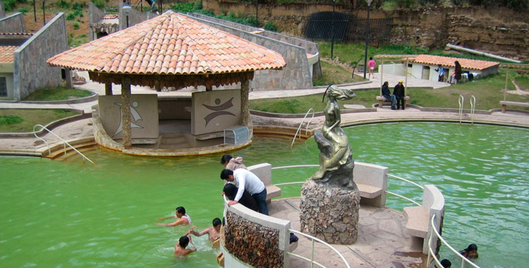
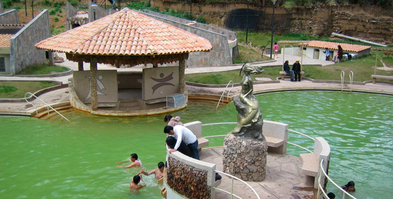

DESCRIPCIÓN
Las instalaciones cuentan con dos piscinas grandes para mayores y una pequeña para niños, así también está
implementado con 10 pozas individuales o privadas. Además, se ha incorporado otros servicios como restaurante, áreas
libres, gimnasio y duchas.
El Complejo Turístico donde se insertan estos baños es un atractivo que cuenta con una piscina olímpica, ideal para
practicar diferentes estilos de natación. Asimismo, presenta una serie de albercas termales, que son, en sí, el
mayor atractivo del complejo.
Las piscinas que se encuentran en este lugar se caracterizan por presentar aguas que tienen un alto contenido de
azufre, aroma que extiende su perfume alrededor de los reservorios de agua. Aquellas fuentes de agua son bastante
visitadas por quienes ingresan al complejo en busca de aliviar distintos padecimientos, en especial, aquellos que
tienen relación con problemas cutáneos. Las aguas de las albercas se encuentran entre los 18ºC y los 22ºC por lo que
además de funcionar como un baño medicinal brindan asimismo beneficios contra el estrés.
 
